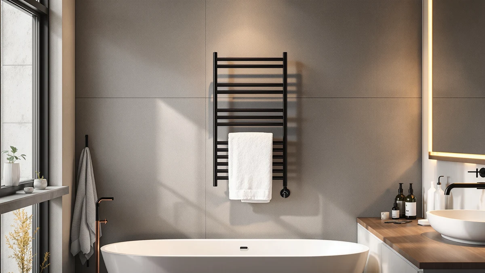

Quick Answer
The Pursonic TW300 towel warmer rack is a stainless steel model priced at $99.99, about $19 to $20 more than the three alternatives in this comparison. That premium buys a sturdier build and a brand with more than one product in the category, but buyers who only want a warm towel after a shower can get similar core function from a cheaper rack.
Our pick: Pursonic TW300 Towel Warmer Rack — $99.99 Check Price on Amazon
Things to Know Before You Buy
- The Pursonic TW300 towel warmer rack costs $99.99, between $19 and $20 more than the Wuissvnb, LKT COBTAC, and POWSAF models we compared it against.
- Its stainless steel construction should resist rust and chipping better over years of bathroom humidity than painted or plated steel.
- Racks in this category generally need either wall space for mounting or floor space near an outlet, so measure your bathroom before ordering.
- None of the four models in this comparison have a published Amazon rating yet, so owner feedback across the category is still limited.
- If price matters more than brand history, the LKT COBTAC and POWSAF models both list at $79.99, the lowest price among the options here.
This Pursonic TW300 towel warmer review looks at whether a $99.99 stainless steel rack is worth $19 to $20 more than three similarly positioned alternatives. A warm towel after a shower is a small comfort, but it only pays off if the rack fits your bathroom, holds up to daily moisture, and does not need replacing within a year or two. The TW300 is the most expensive of the four models in this comparison, which raises a fair question: does the Pursonic name and the stainless steel body justify that gap?
Price is the most visible difference, but it is not the only one. The Wuissvnb Professional Advanced Towel Warmer, the LKT COBTAC Hot Towel Warmer, and the POWSAF Towel Warmer Luxury Towel all sit within a dollar of each other, between $79.99 and $80.99, while the TW300 sells for nearly twenty dollars more. We compared listed materials, current pricing, and how each brand positions itself in the towel warmer market to figure out where that extra money goes and who should buy which model.
Why You Should Trust Us
Ilane Tall covers bathroom hardware for Best Towel Warmers and tracks how towel warmer brands price and position similar hardware against each other. We do not run a physical testing lab, and we have not installed or used the Pursonic TW300 towel warmer rack in a bathroom ourselves. Instead, we research published specs, current Amazon pricing, and verified owner reviews across competing models to build comparisons you can trust before you spend close to a hundred dollars on a bathroom fixture. When we cannot back a claim in this review with a listed spec or a verifiable price, we say so instead of guessing.
Our Research Experience
We did not test the Pursonic TW300 towel warmer rack by installing it in a bathroom, running it for weeks, or measuring its heat output directly. Our review process instead compares what Pursonic lists for this rack against the pricing and positioning of the Wuissvnb, LKT COBTAC, and POWSAF alternatives, then checks that comparison against current Amazon pricing and stock status before publishing.
That approach has limits. None of the four products in this Pursonic TW300 towel warmer review currently carry a published rating or review count on Amazon, so we cannot yet weigh owner satisfaction the way we would for an established bestseller. What we can compare directly is price, listed material, and how each brand describes its own hardware, and that is the basis for every claim below.
Overview & Specs

Pursonic TW300 Towel Warmer Rack
What we like
- Stainless steel construction, which should resist rust and corrosion better over years of bathroom humidity than a painted or plated finish
- Comes from Pursonic, a brand with more than one towel warmer model in this category, including the Pursonic Deluxe we reviewed separately
- We checked Amazon's listing and price right before publishing this review
- Product photos show the rack from five angles, more documentation than some lower-priced competitors provide
Flaws but not dealbreakers
- At $99.99, it costs $19 to $20 more than every other model in this comparison, without a published rating yet to confirm that premium is worth it
- Amazon does not list a customer rating or review count for this ASIN, so you are weighing spec sheets and brand reputation rather than verified owner experience
| Material | Stainless steel |
| Size | — |
The Pursonic TW300 towel warmer rack is the most expensive model in this comparison by a clear margin. At $99.99, it costs about 25 percent more than the Wuissvnb, LKT COBTAC, and POWSAF alternatives, all of which list between $79.99 and $80.99. Something beyond the Pursonic name has to justify that gap, and the clearest candidate is the stainless steel body, which should outlast a painted or plated frame once humidity and daily towel removal start to wear on the finish.
Pursonic also sells other towel warmers, including the Pursonic Deluxe we reviewed separately, which points to an established line rather than a single opportunistic listing. That history matters more for a bathroom fixture you plan to keep for years than it does for a cheap accessory, since replacement parts and customer support tend to be easier to find from a brand still selling multiple models. Until Amazon publishes a rating for the TW300, though, that brand history is the main thing separating it from its lower-priced rivals, not a documented performance advantage. Shoppers weighing this purchase should treat the stainless steel body and the Pursonic name as the two concrete reasons to pay more, and weigh those against the twenty dollars they would save on any of the three alternatives.
What We Liked
The strongest point in this Pursonic TW300 towel warmer review is the material. Stainless steel is a meaningful upgrade over the painted or plated finishes common on towel warmers priced near $80, since it resists the chipping and rust spots that eventually show up on cheaper racks after a year or two of daily steam and moisture.
Pursonic also backs the TW300 with a recognizable brand presence in the towel warmer category rather than a single unbranded listing. That matters when you plan to keep a rack in a bathroom for years, because a company selling multiple models, like the Pursonic Deluxe we cover elsewhere on this site, is more likely to still support that product line down the road than a brand with one listing and no history.
What Could Be Better
The clearest drawback is price relative to the field. At $99.99, the TW300 costs nearly $20 more than the Wuissvnb, LKT COBTAC, and POWSAF models in this comparison, and none of those four listings currently show a published Amazon rating or review count that would confirm the premium delivers a better daily experience.
Without verified owner reviews to point to, this Pursonic TW300 towel warmer review has to rely on listed materials and brand positioning rather than real-world feedback about heat output, noise, or how the finish holds up after months of use. If you want proof of long-term performance before spending the extra money, check Amazon again closer to your purchase date to see whether reviews have accumulated.
Who Is It For?
The Pursonic TW300 towel warmer rack fits a buyer who prioritizes build material over saving the last twenty dollars, especially someone who has already dealt with a cheaper rack rusting or chipping in a humid bathroom. It also suits a buyer who prefers purchasing from a brand with more than one product in the category, since that history offers more reassurance than an unbranded listing at a similar price. A guest bathroom that stays steamy for long stretches, for example, is exactly the kind of environment where a stainless finish earns its keep over a plated one.
It fits less well for anyone shopping strictly on price or anyone who wants to see verified ratings before committing close to $100 to a bathroom fixture. For that buyer, the lower-priced alternatives in this comparison, each under $81, make a more cautious starting point until more reviews accumulate across the category. Someone furnishing a rental or a second bathroom on a tight budget will likely get more value from the cheaper options than from the TW300's premium finish.
Alternatives to Consider
If the price of the Pursonic TW300 towel warmer rack is the sticking point, these three alternatives all list between $79.99 and $80.99, roughly $19 to $20 less, and are worth comparing before you decide.

Editor’s Pick
Wuissvnb Professional Advanced Towel Warmer
At $80.99, this is the closest-priced alternative to the Pursonic TW300, under a dollar cheaper, which makes it the easiest direct swap if you want to compare two similarly positioned racks before buying either one.
$80.99
Check Price on Amazon
Best Value
LKT COBTAC Hot Towel Warmer
The LKT COBTAC lists for $79.99, about $20 less than the TW300, making it the better starting point if price matters more to you than buying from an established multi-product brand.
$79.99
Check Price on Amazon
Premium Choice
POWSAF Towel Warmer Luxury Towel
POWSAF prices this model at $79.99, tying the LKT COBTAC as the cheapest option here, and its luxury branding suggests it targets the same style-conscious buyer as the Pursonic TW300, at a lower price point.
$79.99
Check Price on AmazonFrequently Asked Questions
Is the Pursonic TW300 towel warmer worth the extra cost?
It depends on what you value. The TW300 costs $99.99, about $19 to $20 more than the Wuissvnb, LKT COBTAC, and POWSAF alternatives in this comparison, and that premium currently buys a stainless steel build and a multi-product brand rather than a documented performance edge, since none of the four listings have a published Amazon rating yet.
What makes the Pursonic TW300 different from cheaper towel warmer racks?
The main difference we can confirm from listed specs is the stainless steel construction, which should hold up better against rust and chipping over time than the painted or plated finishes common on towel warmers priced near $80. Pursonic also sells other models, including the Pursonic Deluxe, giving it more of a track record than a single unbranded listing.
Should I wait for reviews before buying the Pursonic TW300?
If verified owner feedback matters to your decision, it is reasonable to wait. None of the four towel warmers in this comparison currently show a published rating or review count on Amazon, so anyone buying today is relying on listed materials and brand reputation rather than confirmed real-world performance.
Which alternative should I buy if I want to spend less than $80?
The LKT COBTAC Hot Towel Warmer and the POWSAF Towel Warmer Luxury Towel are tied at $79.99, the lowest price among the four models in this review, making either one the better starting point if budget matters more than buying from an established brand name.
Final Verdict
This Pursonic TW300 towel warmer review comes down to a straightforward tradeoff: pay roughly $20 more for a stainless steel build and the backing of a brand with multiple towel warmer models, or save that money on the Wuissvnb, LKT COBTAC, or POWSAF alternatives, all priced between $79.99 and $80.99. Until Amazon accumulates verified ratings across all four listings, neither choice has a clear performance edge, so the decision mostly comes down to how much you value stainless steel durability and the Pursonic name over the lowest sticker price. Buyers who plan to keep a towel warmer for years and want to avoid the rust spots that show up on cheaper finishes have good reason to pick the TW300 despite the premium.